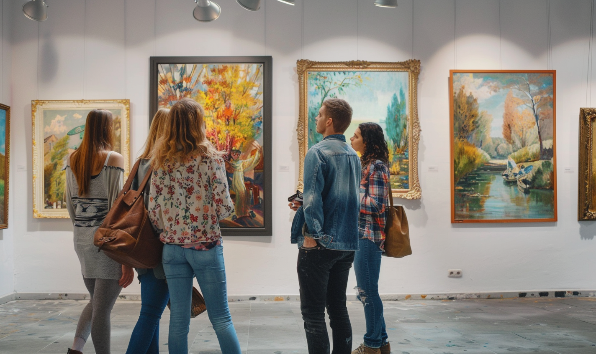

FOR THE ONE-MORE-SONG PEOPLE
Social media for real life
Your interests. Your people.
A world of good things to get into.
A little inspiration. A little more together.


 Food & drink
Food & drinkMake room for a catch-up.


A shared interest is a good start.

A world that feels like you
Music OutdoorsFood & drink
OutdoorsFood & drink Games
Games Arts & culture
Arts & culture Movement
MovementFOR THE ONE-MORE-SONG PEOPLE
A LITTLE MORE OUTSIDE

STAYING IN COUNTS, TOO
Big nights, quiet hobbies, and everything in between.
Your people are part of it
The music you both love. The coffee you keep talking about. The things that make “we should” feel like a good idea.
Start with something you enjoy.
Bring someone along.
AlexJoLive musicCoffeeArt galleries
An afternoon worth sharing.A simple plan
From a good idea to a real day
Find an event or start with your own idea. Give it a time and a place, invite your people, and keep the details together.
Go where life happens.
We win when you go.
There’s a whole world out there.
A big night or a small moment.
Make it yours.